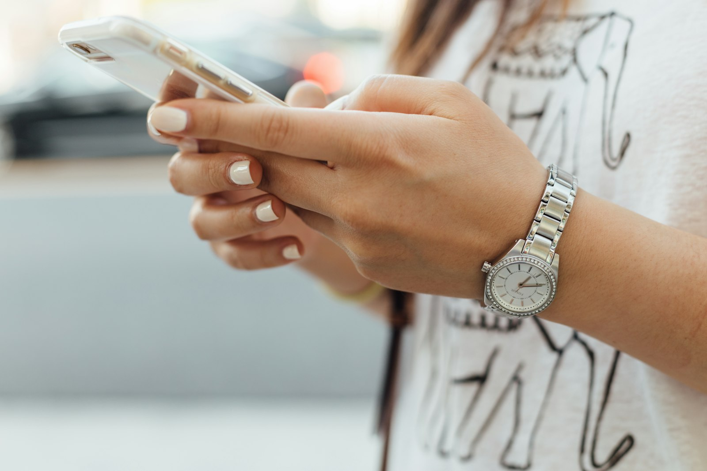

Photo by Paul Hanaoka on UnsplashMost kids don't check email. They don't have a work inbox with a spam filter quietly doing triage before anything reaches them, and they don't yet have the "this looks like phishing" instinct built from years of ignoring fake invoices and password resets. What they do have is a phone number — attached to them personally, sitting in the same messages app as texts from friends and family. A scam text arrives in that same trusted thread. That's not a kid-carelessness problem; it's what makes SMS a fundamentally different, and more mobile-specific, attack surface than email ever was.
This isn't just intuition. Verizon's 2026 Data Breach Investigations Report — which measured voice and SMS phishing simulations at scale for the first time — found that phone-centric phishing produced meaningfully higher click-through rates than email, describing a roughly 40% gap between the two. Attackers are leaning into text and calls specifically because people have gotten better at spotting a fake email, and a text doesn't come with the same years of built-up suspicion. (Verizon 2026 Data Breach Investigations Report)
The bait is almost always one of two shapes: a problem ("your package couldn't be delivered, confirm your address") or a reward ("you've won a gift card, claim it here"). Both create the same pressure — tap now, think later — and both work because a text message shows no address bar, no sender domain to squint at, nothing but a short line of text and a link. An adult skimming email has some chance of noticing a slightly-off sender address before clicking; a text gives up that signal entirely.
A kid's phone number gets attached to game accounts, streaming logins, and family phone plans well before they're managing any of it themselves, which means it's already circulating in places a scammer's number-generation software can reach. And the "you've won something" framing hits differently for a kid than a "your bank account" alert would for an adult — a free gift card or game currency prize is exactly exciting enough to skip the pause that would otherwise catch it.
Content filtering blocks a smishing link's destination at the DNS level once it's tapped and the domain is already known to be malicious. It can't stop the text from arriving, and a lot of these scam links use domains that are too new to be flagged yet — there's no blocklist entry for a site that didn't exist last week. The "don't tap it" habit above is the part no device setting replaces.
Paxio's content filtering runs in the background to catch the links that are already known-bad, while you build the habit that catches everything else.